Fellowship Presentation
Mike Smith, University of Sheffield
michaeltsmith.org.uk
m.t.smith@sheffield.ac.uk
@mikethomassmith


Background
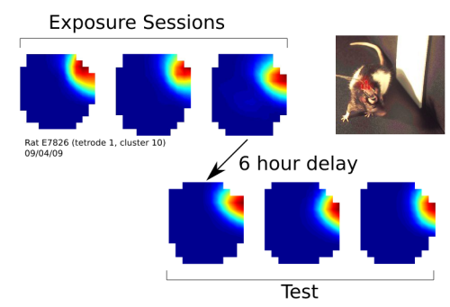 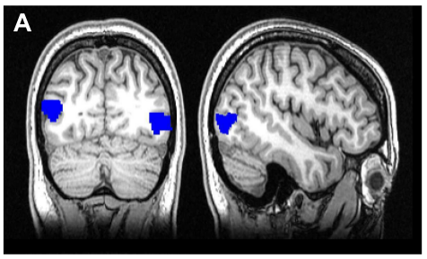| BSc Computer Science, Warwick | Simulated bipedal motion |
| MSc Informatics, Edinburgh | Synaptic charge-based noise analysis |
| MSc Neuroinformatics, Edinburgh | Head-direction and place cell recording |
| PhD Neuroinformatics, Edinburgh | Integration of self-motion cues in humans |
Background
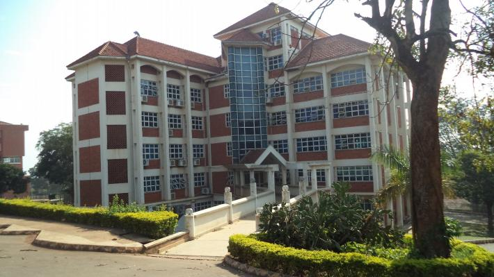2014: Moved to Kampala to lecture at Makerere University in the computer science department.
- Crowd-sourced road crash transcription
- Air pollution monitoring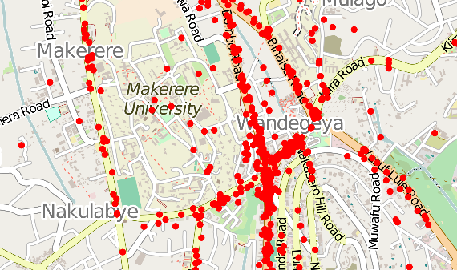
- Malaria incidence modelling
2015: InnovateUK Sheffield / CitizenMe grant. Developed scikic online Bayesian education tool & distributed DP method.
Research Now
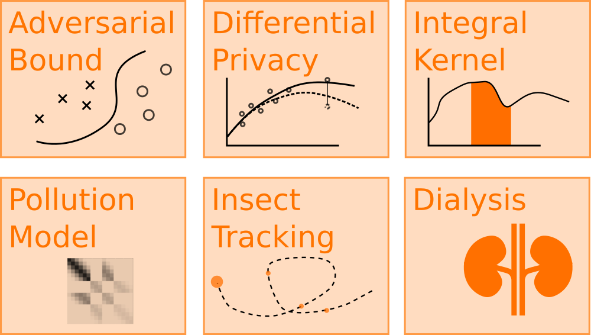Adversarial Bound
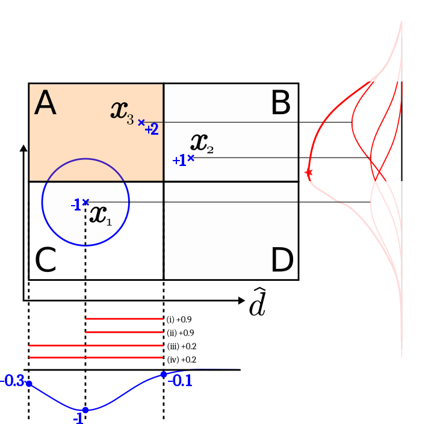Collaborators: Kathrin Grosse & David Pfaff of CISPA, Saarland.
Adversarial Examples using Gaussian Process classification. In particular can we find a lower bound on the number of pixels one needs to perturb to get a confident misclassification?
Next: deepGPs?
Adversarial Bound
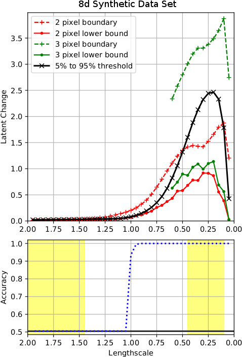 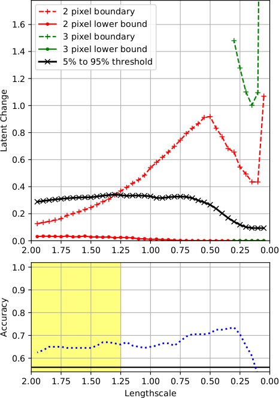
Adversarial Bound
Papers:
Kathrin Grosse, David Pfaff, Michael T. Smith, Michael Backes. (2019). The Limitations of Model Uncertainty in Adversarial Settings (in review on 5th Feb to CCS).
Kathrin Grosse, Michael T. Smith, Michael Backes. (2019). Killing Three Birds with one Gaussian Process: Analyzing Attack Vectors on Classification (in review at Euro S&P).
The bounds method is in prep.
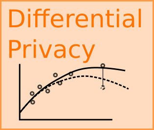Differential Privacy
Finding practical bounds on the scale of DP noise required for GP regression and classification.
- Developed the cloaking method
- Used inducing inputs to reduce sensitivity
- Extended to work with classification (using the Laplace approximation)
Papers: Smith, M.T., Álvarez, M. A., Zwiessele, M., Lawrence, N. D. (2018). Differentially Private Gaussian Processes, AI STATS 2018.
We have a second paper covering the inducing inputs, classification, hyperparameter selection, etc, in review, JMLR.Next: Input privacy for GPs.
Differential Privacy

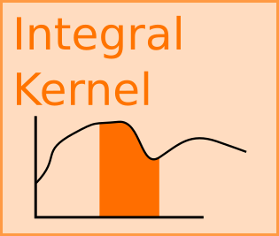Integral Kernel
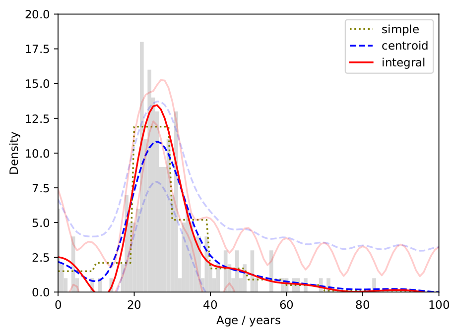 A spin-off from the DP work. Based on GP latent-force models. Uses the observation that one can integrate over a kernel to allow the observations to be of the integral of the latent function. Examples: ecological hectad data, annual financial reports, census aggregations for privacy, camera pixels, fMRI, etc.
Paper: Gaussian Process Regression for Binned Data (Stats and Computing) being revised for resubmission in February.
Dialysis Analysis
 Collaborator: James Fotheringham, Consultant Nephrologist and Honorary Lecturer, ScHARR.
Collaborator: James Fotheringham, Consultant Nephrologist and Honorary Lecturer, ScHARR.
Predict clinical variables over 2-4 days. ICM coregionalisation improved over simple GP fit for a subset of patients (RMSE down 15%, p<0.05). Hierarchical model to incorporate rare events from all patients.
Paper: Drafting a paper looking at where the method works but also what improvements are needed in data quality.
Continuing Research
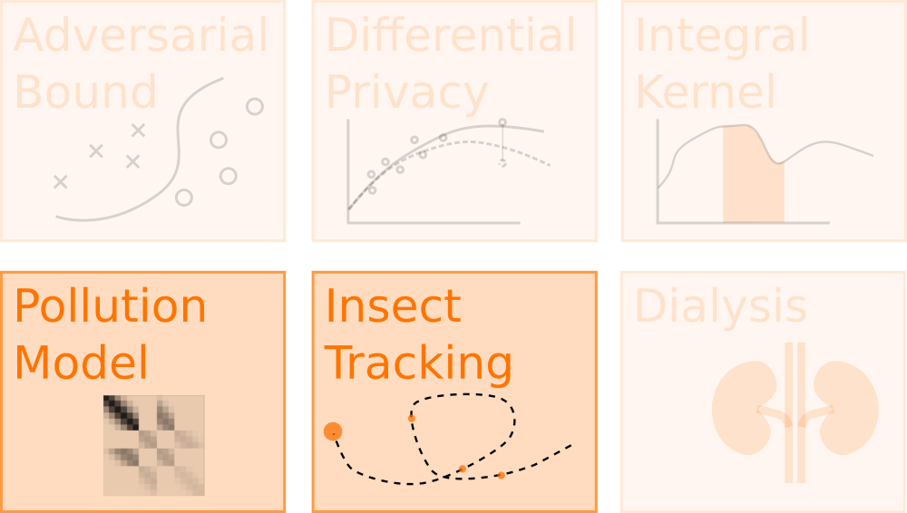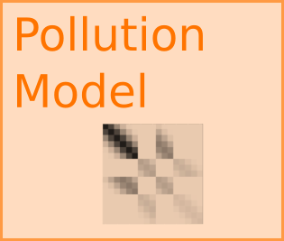Kampala Air pollution
I began the project while working in Kampala. No one was collecting air quality data in the city at the time.

 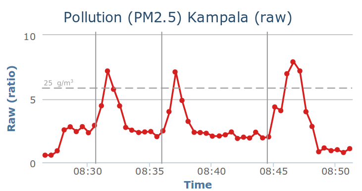
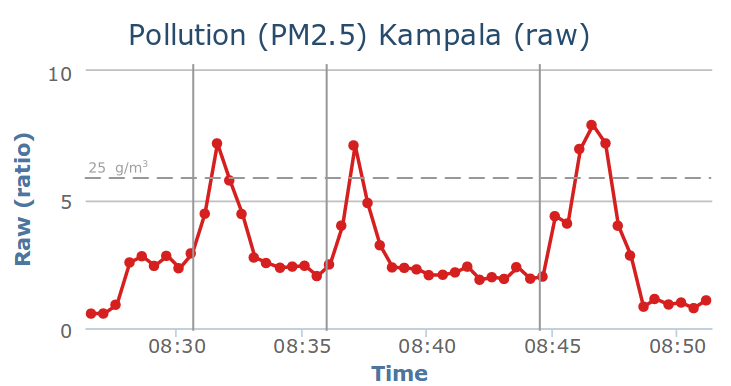Kampala Air pollution
 First collaborator was Prof. Engineer Bainomugisha. We won funding from the UC Berkeley’s Development Impact Lab (2016, $56k) to develop the hardware. Recruited Joel Ssematimba.
First collaborator was Prof. Engineer Bainomugisha. We won funding from the UC Berkeley’s Development Impact Lab (2016, $56k) to develop the hardware. Recruited Joel Ssematimba.
Example data stream
Combining Sensors
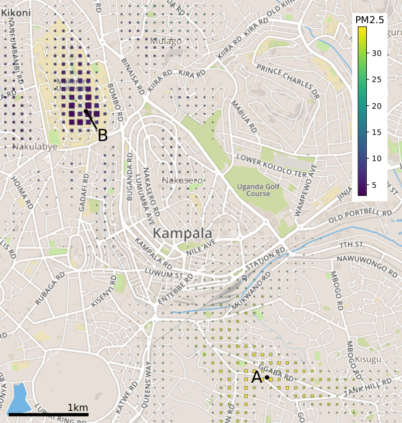Current model is a simple GP with inputs:
- latitude, longitude, time
- time-of-day
- distance from large roads
Output: Presentations and posters at workshops.
Combining Sensors
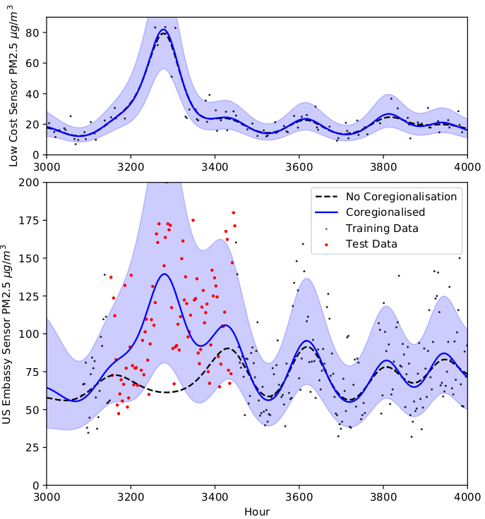Testing coregionalisation. Collaborating with Prof. Martin Mayfield of the Urban Observatory, who has lent the project the equipment to validate our methods. Rohit Chakraborty, his PhD student, will be visiting Kampala.
Output: Extended abstract and talk, Advances in Data Science 2018, Manchester.
Impact and collaboration
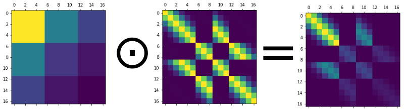The KCCA (Kampala Authority) are heavily involved in the project, giving us confidence of impact  (particularly important for funders too). The low-cost network makes it suitable for low-income cities, but requires sophisticated mathematical methods to quantify uncertainty and for calibration.
(particularly important for funders too). The low-cost network makes it suitable for low-income cities, but requires sophisticated mathematical methods to quantify uncertainty and for calibration.
Funding
We just won the internal QR GCRF funding (£40k). I've allocated this mainly for post-doc time in Kampala to build and deploy the network, also part-time post-doc time (here) for developing the model.
Two months Sheffield based post-doc time from Urban Observatory to translate the method for Sheffield's sensor network.
Future Funding
Currently applying for the EPSRC GRCF Mathematical Sciences fund (£450k) to pay for post-docs both here and in Kampala for two years. Deadline: 14th February.This would go beyond correlations and will introduce causality and a rudimentary physical-basis to improve model accuracy, but also to allow the KCCA to ask "what if?" questions. We will incorporate anomaly detection.
Lots of interest in mathematical methods for development, air pollution, smart-cities, impact and IoT, etc.
Further collaborations
We have an effective network of collaborations. Other links are with Dr. Pete Edwards (Chemistry, York) who has provided considerable support on pollution questions and the low-cost sensors. Dr. Bruce Kirenga (Lung Institute, Kampala) will be using our data to answer epidemiological questions. Prof. Richard Wilkinson and Dr. Mauricio A Alvarez are supporting the development of the causal probabilistic model.
Initial planned outputs (next seven months): (1) calibration kernel paper, (2) low-cost sensor designs, (3) results of calibration across city/validate low-cost method.
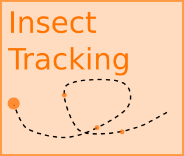Insect Tracking
Motivation: Finding nests and understanding foraging and mating behaviour are vital for conservation. Provision of training data for brainsonboard.
The problem: Tracking insects in the field currently necessitates the use of electronic tags and expensive radar equipment, making it largely inaccessible to most researchers and inappropriate for smaller insects.
Insect Tracking
The solution: Simple retroreflective tags (<5mg) and a camera with a flash in the sky.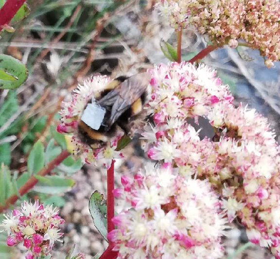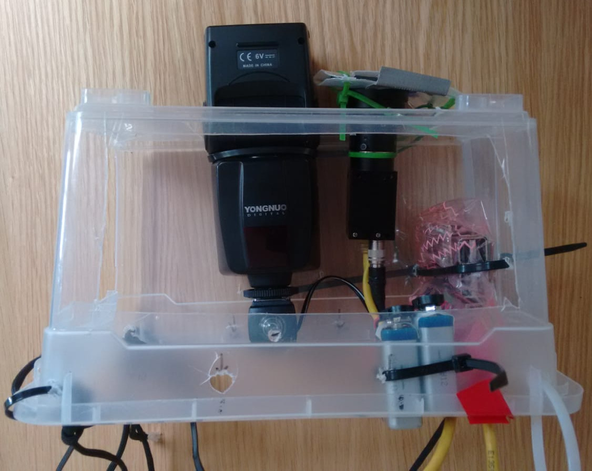
Insect Tracking
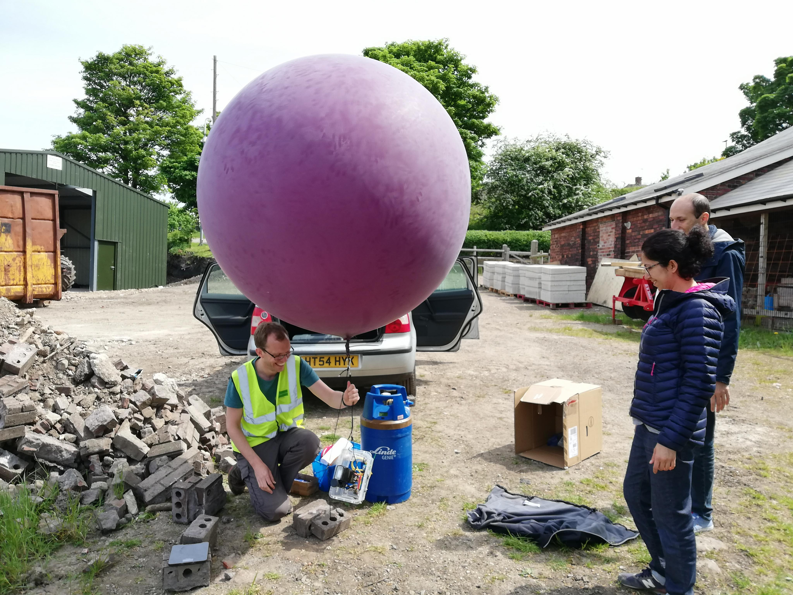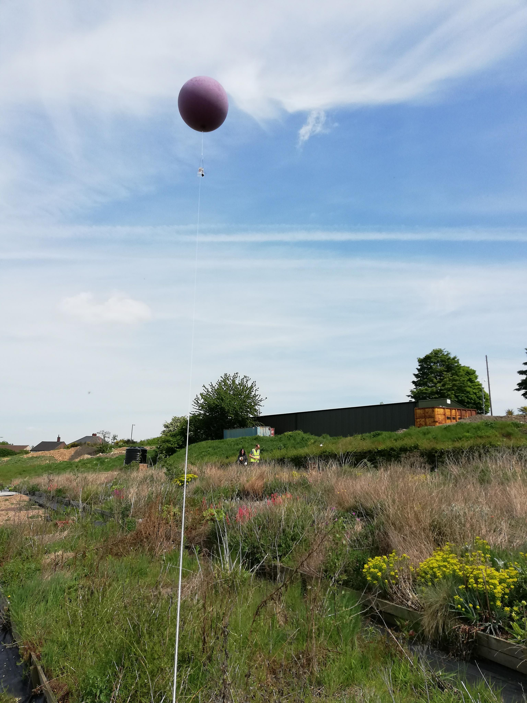
Insect Tracking
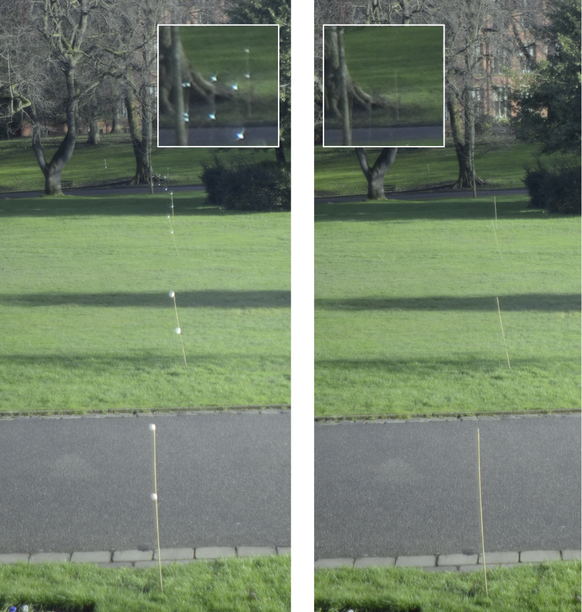
Insect Tracking
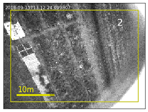
Collaborations
Mike Livingstone (Department of Landscape Architecture) supporting with insect, site and plant expertise.
Richard Comont (Bumblebee conservation trust) has been advising on relevant research questions.
Michael Mangan and the brainsonboard multiyear project will be conducting honey bee experiments. Tracking them as they navigate is currently challenging. The system will slot into this perfectly, providing behavioural data to help with model constraint.
Prof Jeremy Field has contacted me about using the system for investigating where paper wasp workers.
Funding
Previously: Won two rounds of Sheffield University Socially Enterprising Researcher grant (2016 & 2017).
Applied for BES small-grants, but with insufficient ecological research experience.
Future:
Will resubmit to the BES with ecologist as co-I, with specific biological research question in mind (deadline 20th March). Also will apply to the C.B. Dennis trust (1st March).
Vision & Strategic Fit
The insect tracking and air pollution projects both have high impact potential and strong collaborative networks, with partnerships both inside the university and internationally.
The air pollution project in particular has the potential to accrue funding (e.g. for future expansion to other domains). Insect tracking: The recent attention to the massive decline in insect populations has focused interest on this field and the urgent need to develop observational methods.
Pollution Project: Vision
- Development increasingly based on integrating multiple sources of real-time, low-cost, large-scale data.
- Suffer from biases and unquantified uncertainty.
- But may allow cities in the Global South to 'leap-frog' the systems in the Global North.
- Unfortunately using such data depends on more sophisticated methods.
- Need to develop robust mathematical tools for its analysis and integration.
- Ensure that this development is conducted in partnership with those research groups who will later need to apply it locally.